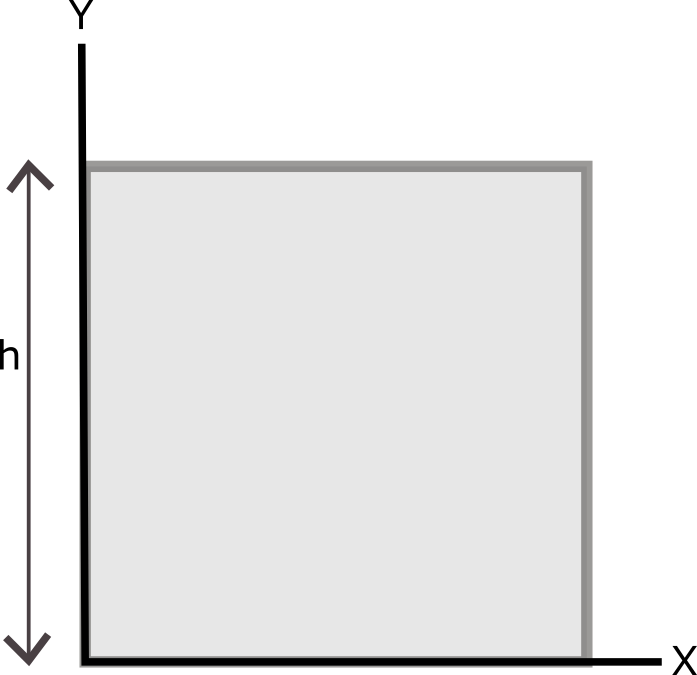
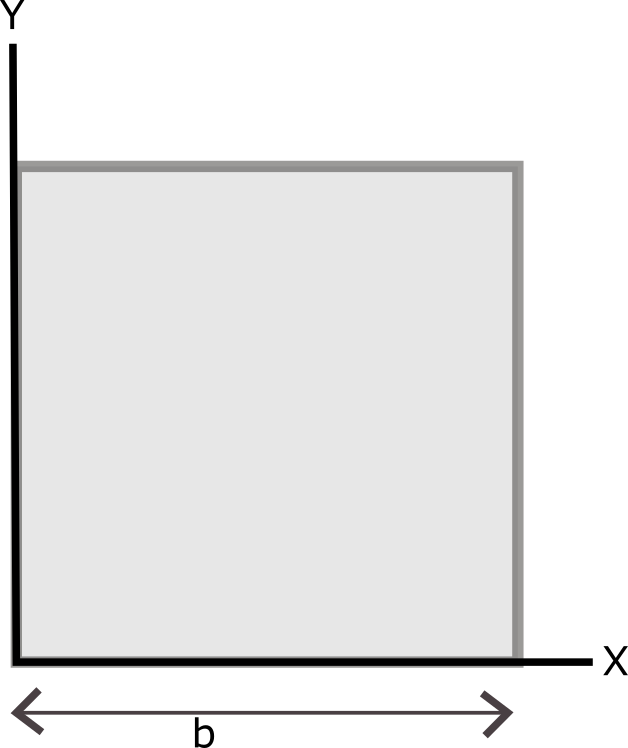
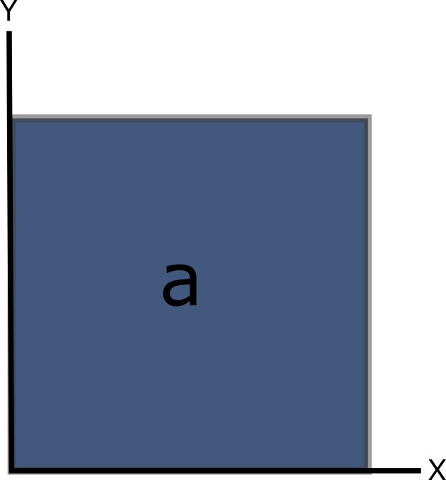
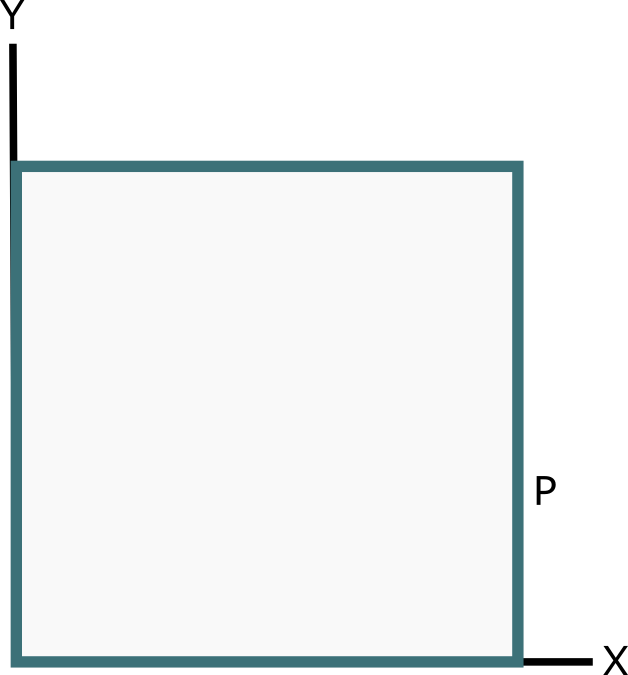
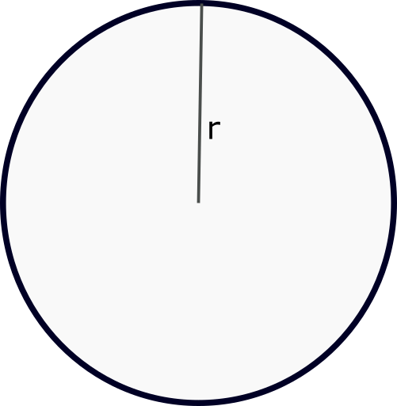

Los objetos bidimensionales son aquellos que existen en 2 dimensiones, representandose, pues, a lo largo y ancho de un plano (Cordenadas X e Y), asi mismo su nombre se da dependiendo de la cantidad de aristas (lados) que este posea, siendo el circulo quien posee el menor numero de lados (1).
Geometria Bidimensional
Siendo los objetos bidimensional objetos reales, estos ocupan un lugar en el espacio y, por ende, se pueden realizar calculos matemáticos con ellos, presentando las siguientes caracteristicas:
Altura: Distancia en el eje Y desde la base del objeto (donde Y = 0) hasta el punto más alejado de la base en eje Y. Suele ser representado con la letra 'h'

Anchura: Tambien llamada "Base" representa la distancia en el eje X desde el inicio del objeto (X = 0) hasta el punto más alejado del origen en el eje X. Suele ser representado con la letra 'b'

Area: Es toda la zona que cubre el objeto bidimensional (cerrado), o sea, todo lo que se encuentre dentro de la union de sus aristas. Suele ser representado con la letra 'a'

Perimetro: La distancia total recorrida por todos los lados que componen la figura. Suele representarse con la letra 'P'

Radio: Caracteristica exclusiva de el circulo, representa la distancia entre el centro del circulo hasta el limite de este. Suele representarse con la letra'r'

Calculos para la obtensión de las caracteristicas de los objetos bidimensionales
El calculo de estos elementos varía dependiendo de la figura geometrica, por lo que aqui presentaremos la de aquellas figuras más utiles y conocidas
Figura
Area
Perimetro
Circulo
(pi x r)²
2 x pi x r
Triangulo
(b x h)/2
Suma de sus tres lados.
Cuadrado
b x h
Suma de sus cuatro lados.
Trigonometria
Siendo el triangulo la figura de menor aristas capaz de adaptarse a las demás figuras, estas recibe ciertas caracteristicas especiales:
Seno: Representa la elevación del angulo. Formula: Sen(@) = Opuesto/Hipotenusa
Coseno: Representa la inclunación del angulo. Formula: Cen(@) = Adyacente/Hipotenusa
Tangente: Representa la razón entre el cateto opuesto y el adyacente. Formula: Tan(@) = Opuesto/Adyacente o Sen(@)/Cos(@)
Teorema de Pitagoras
La forma de encontrar el valor exacto de la hipotenusa es haciendo uso del Teorema de Pitagoras, el cual nos presenta la siguiente formula: